1. Browse hierarchy
v0.2 — four parallel tabs
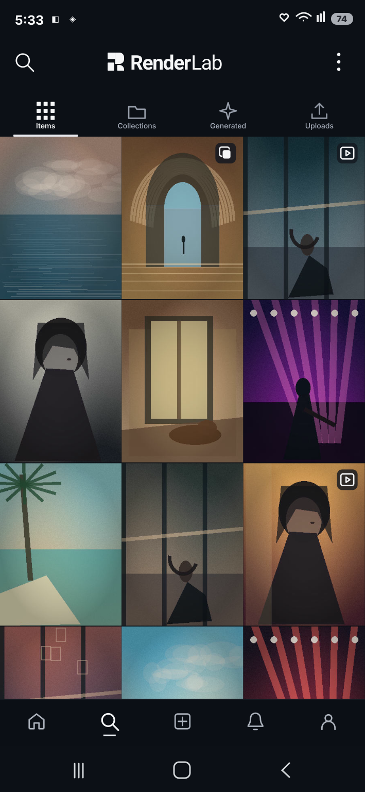
v0.3 — two organization tabs
v0.3 — root Collections list
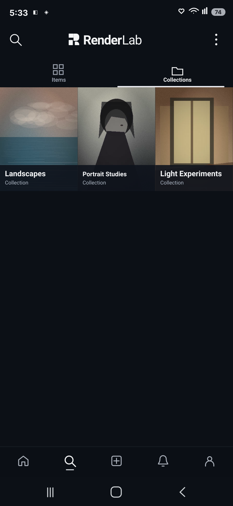
2. Browse controls / source and kind
v0.2 — misleading default Images selected
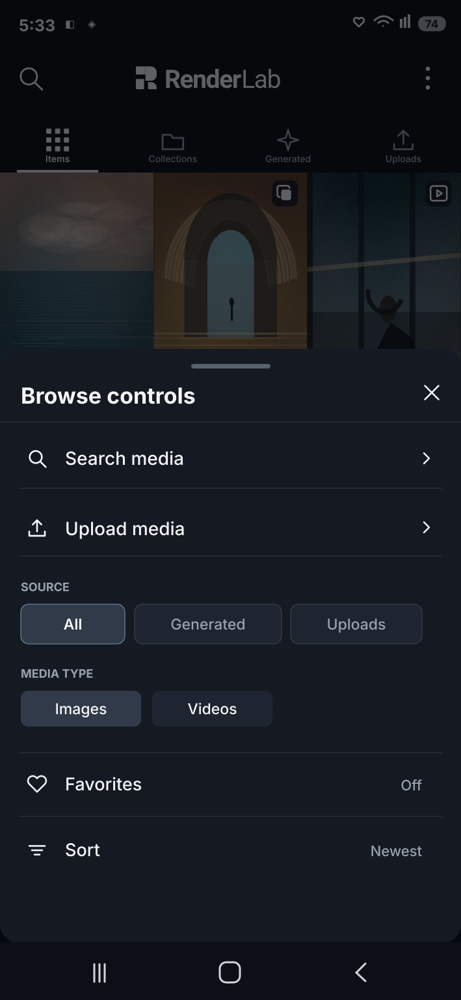
v0.3 — All sources + All types
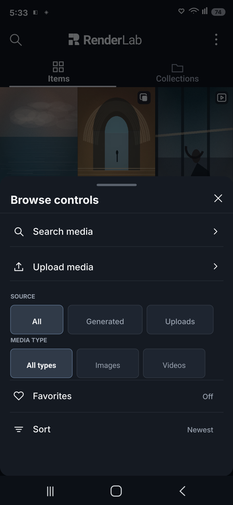
v0.3 — Generated selected
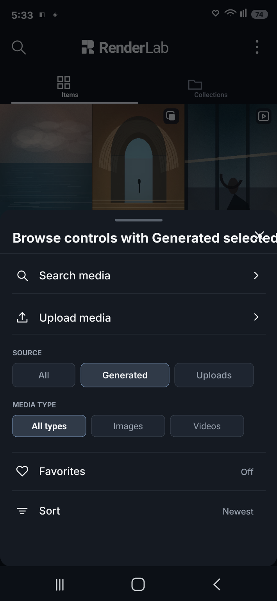
v0.3 — Uploads selected
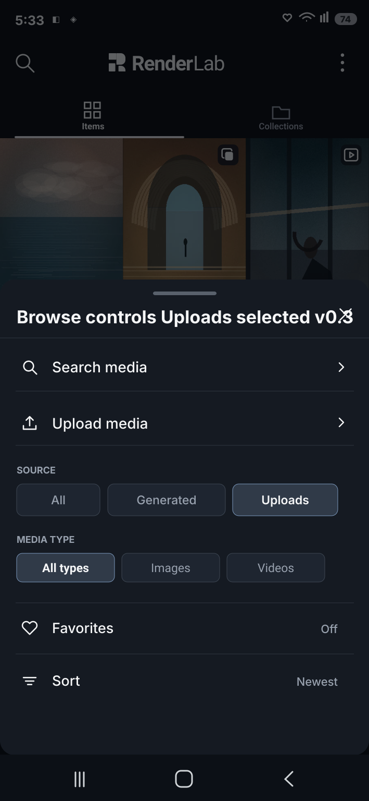
3. Truthful source-filtered grids
Generated — nine fixtures, two video posters
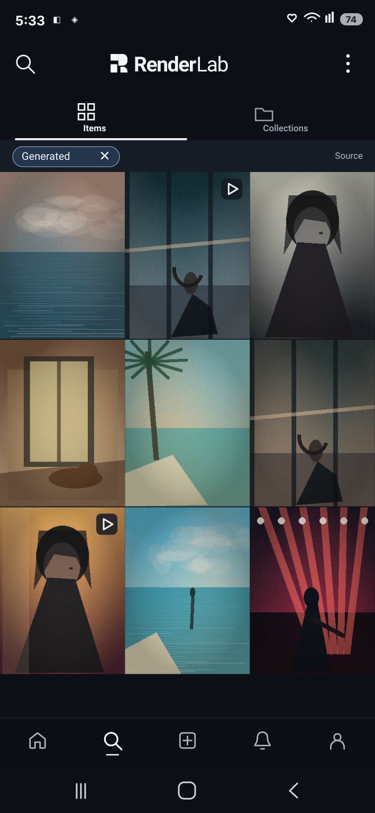
Uploads — three fixtures, one grouped still
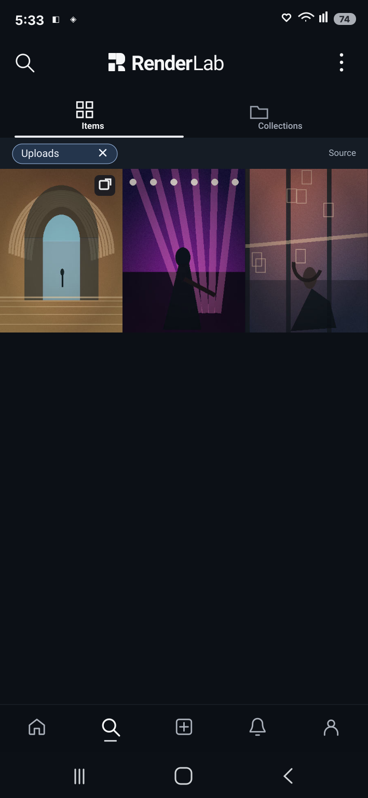
4. Contextual Collection and empty state
Contextual grid (v0.2 baseline, unchanged)
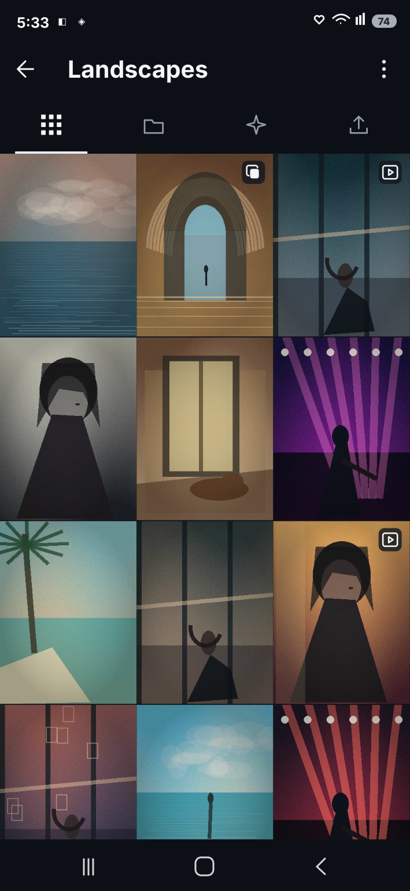
Empty contextual collection (v0.3)
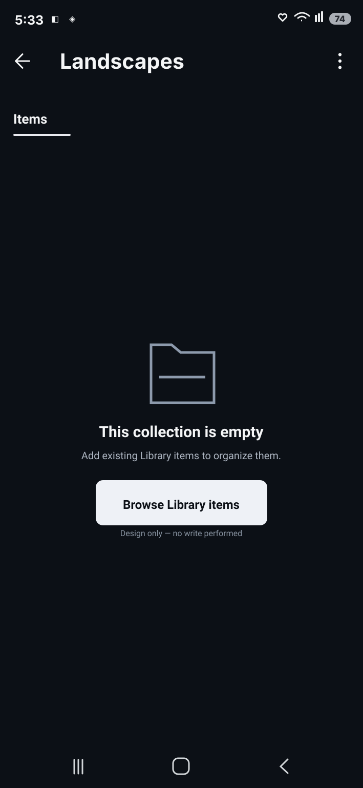
5. Media and text stress
9:16 portrait + 16:9 landscape crop fixtures
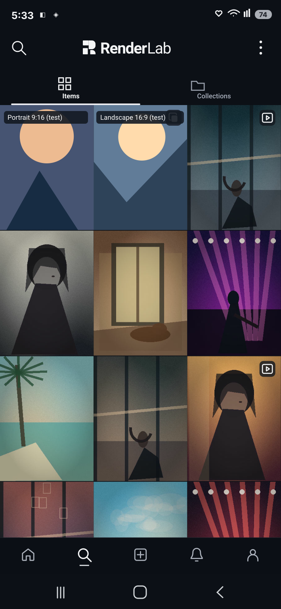
Long caption and title in scrolled Feed
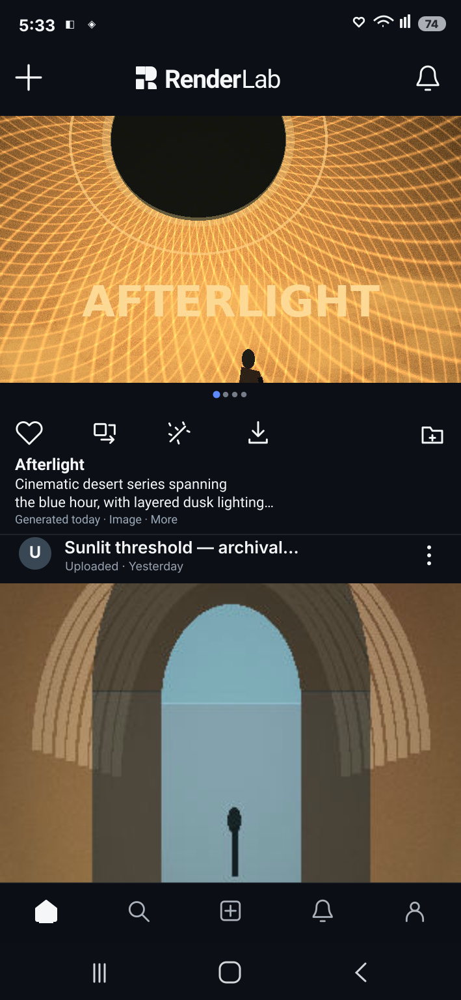
6. Supplemental non-populated states
v0.3 — Loading
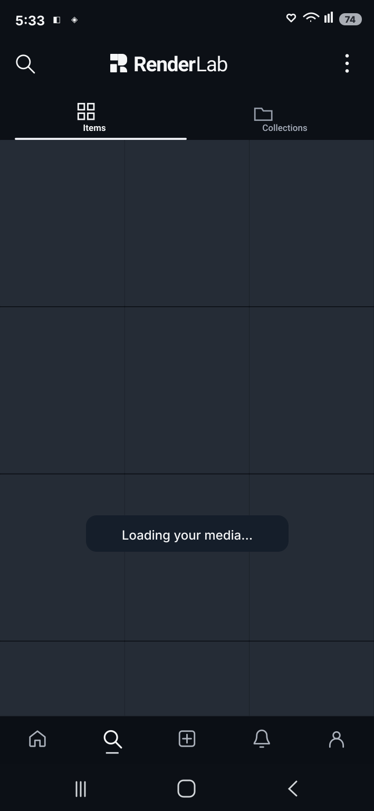
v0.3 — Network error
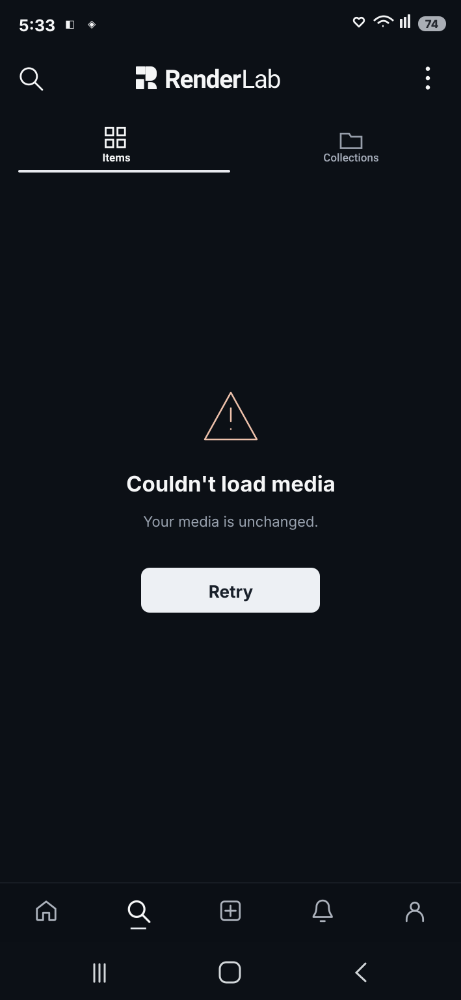
v0.3 — Empty Library
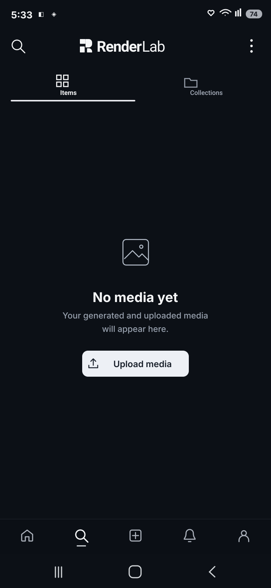
v0.3 — Focused Collections tab
Boundary: 709 × 1536 static SVG frames, with fixture metadata checked from generator source. No real device rendition, screenshot diff measurement, functional upload/filter/search, back-stack persistence, screen-reader acceptance, native code, security gate, merge or deployment is implied by this HTML.